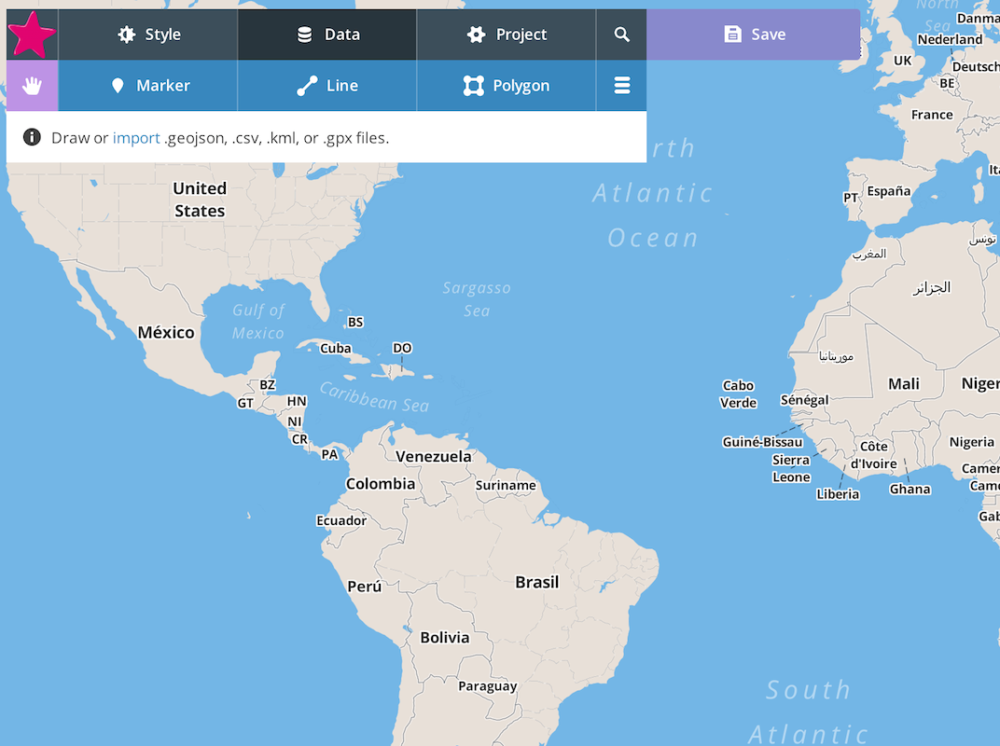
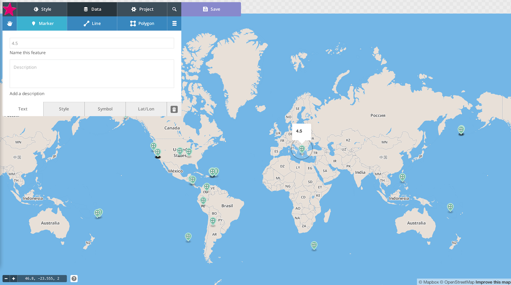

Web Mapping Quickstart
This is our last week together . :(
So let's go out with a bang !
Today is Session 4: Advanced Web Mapping
Follow along by opening
Chrome and typing this:
http://mizmay.github.io Wherever you see text like
this , it's a
link .
At this point, we've done a solid overview of major concepts and pieces of the web mapping space.
Things we said we won't cover:
GIS and data wrangling
Web servers and what is required to set up a system for collecting data .
But there are a couple/few things about data that are useful in web mapping .
In general, we should all know more about geographic data .
Why? Because web maps are picky and tempermental .
What makes data geographic ?
It is information that has a location tied to it.
Geographic data can be raster (pixels ) or vector (points , lines , polygons ) data.
Vectors first.
Vector geo data has three things: geometry , a location , and attribute information .
First we will talk about what makes GeoJSON , then we'll get to adding it to web maps .
As mentioned ,
GeoJSON is an extension of a format called
JSON , which stands for
JavaScript Object Notation .
Because GeoJSON is basically just JavaScript , it can easily be used in web maps !
For example, Leaflet loves GeoJSON.
Just for your information ...
GeoJSON has some required attributes . GeoJSON features need a type , geometry , and properties .
(To learn more about GeoJSON's specificities, check out
Learn GeoJSON .
#shamelessplug )
Let's break it down.
JavaScript objects exist of a series of key-value pairs .
A geojson object must have at least three specific key-value pairs.
The value in the key-value pair for
"geometry" is actually an
object itself .
That object includes two things:
"type" and
"coordinates" "type": "Point" "Point" can be
"Polygon" "LineString" or any other supported geometry type.
"coordinates": [ -122.65, 45.51 ] For lines or polygons , this will be a series of coordinate pairs .
All together now:
"geometry": Like
"geometry" "properties" also has an
object as its value.
Inside of that object, you can add whatever properties you want.
"properties": This gives us a GeoJSON object :
Most GeoJSON datasets you will come across have more than one feature in them.
This is written as a FeatureCollection that contains all of the features.
The features are listed as an array of objects.
Arrays are bookended by
square brackets: [1, 4, 3] Now we know what a GeoJSON file looks like!
Note: GeoJSON files can have three different file extensions: .geojson , .json , and .js .
How do we use a GeoJSON file?
Let me count the ways...
Let's first download a geojson file.
Scroll down and right-click to save the GeoJSON for Past Day M2.5+ earthquakes .
Once you have it downloaded, open it in a text editor. Or, you can just click on the link to see it in the browser.
This shows the earthquakes > magnitude 2.5 in the past day . Notice the geometry and properties for each one?
Quickly: What is GitHub ?
GitHub is an
online repository for
code and a system for
collaborating on projects.
It has lots of cool features , which we'll see here in a minute .
Copy and paste the geojson into the box, either from the file or from the browser .
Where it says Name this file... , type earthquakes.json .
When you're done, click Create public gist .
Woohoo!
If you click on one of the map markers, you will see the information in properties for each earthquake.
This map, like some of the others we've seen, is
embeddable . Head to
bit.ly/github-maps to learn more about that.
THIS IS WHERE THE UNEDITED MATERIAL STARTS
Let's say we want a little more customization of our map. We can use Mapbox 's in-browser editor.
Head over to
mapbox.com . If you have an account, log-in. If you don't, use this one:
username: beginningmaps password: maps4beginners Click Projects at the top, and then Create Project .
Click Data at the top, then import .
Select the earthquakes GeoJSON file you downloaded before.
You now have the option of selecting what property you'd like to use for popups, how you'd like to style your markers, and so on.
Make your selections for each of the tabs and click Finish importing .

You can also customize the basemap using the Style tab at the top, and share the map via the Project tab.
THIS IS WHERE THE OLD MATERIAL STARTS
Welcome Back
Two weeks ago: Session 1
Web mapping platforms and projects
Last week: Session 2
Web mapping from scratch
This week: Session 3
Advanced web mapping
Design and cartography principles for the webMore on styling and interaction (html, CSS, Javascript, CartoCSS) Tilemill In print cartography, there are dozens of map types:
Reference Maps
Wayfinding
Transit
Navigation
Topographic
Thematic Maps
We are entering the GOLDEN AGE of web mapping:
There are libraries and APIs and tutorials to help you translate these map types to the web.
... (but only a subset of these are easy with out-of-the box tools)
Historically web mapping has evolved without much cartographic theory ...
There was Google and then there were mashups
... which led to an explosion in special thematic maps
... and also this question in the minds of many cartographers:
Are web maps and print maps homologous or analagous ?
I am not fond of heat maps.
The term 'heatmap ' is imprecise. Isopleth? Point density? Interpolation?
Where the points are sparse or coincident, kernel density generates a meaningless blur:
Common Js libraries that generate 'heatmaps' dynamically use zoom level as a proxy for kernel size, which makes no sense analytically.
The default color scheme is horrid (nicknames: "Tacky Angry Rainbow " and "Angry Fruit Salad ").
Tacky Angry Rainbow Angry Fruit Salad They arise from demand from people who don't know what they are doing, but know they want to show a lot of points on a map.
Alternative: clustering
Someone clever putting a lot of points on maps quite artfully:
Eric Fischer In general all of these examples follow certain slippy map and mashup paradigms, which we talked about last time.
The hottest other option right now is D3 .
D3 is a Javascript library built for data visualization.
In all the best and worst ways:
D3
IS
IN
SANE
...there are other mapping libraries out there that can handle different projections, distortions, and animations... plus
whatever else you want to do .
We should still strive for sound cartography in mashups .
A few high level concepts from cartography, which is a visual enterprise:
1. Visual variables
2. Visual hierarchy
BAD
3. Visual argument
An important concept for web cartography is "screen real-estate "
Space is scarce Mobile vs. desktop Fluid vs. compartmentalized layout Slippy map is a way around all of this but.... for some maps it is overkill & potentially a cop-out.
The main thing the web brings to cartography is interactivity , which can take many forms.
In web design and development, people make entire careers out of designing for interactivity. The field is called UI/UX , which is shorthand for user interface and user experience .
It means you think through how people who visit your site will interact with it, and you design the interface to guide the user toward the experience you want them to have.
UI/UX is a really important component of web mapping.
Project managers creating government web portals for geospatial data, I am talking to you.
For this reason, while it makes sense in print cartography to talk about map readers , in web cartography we talk about map users .
In our first session, we saw some forms of interactivity that are standard in out of the box tools.
Panning & Zooming
Info Boxes
Tooltips
Highlighting
Charts
Embedded images/video
Geocode box
"Zoom to my location" button
Animation
All these whizz-bangs are neato!
Click on Menu > Tools > View Source & copy/paste all the text you see into a text editor.
File > Save As > mobile.html
This tutorial uses a function from the Leaflet library to zoom to your approximate location.
To make it work, you probably need a web server running.
If you are on a mac or a Windows or Linux machine with Python installed and globally available, type: python -m SimpleHTTPServer
Type "localhost:8000 " into an new browser window & navigate to where you saved mobile.html
We'll go through it chunk by chunk.
Can you figure out how to switch the basemap to the Stamen toner tiles we used last week?
CartoCSS
For example:
CartoCSS is based on CSS. Some things to understand:
Just like with CSS, rules are applied in order. Later ones overwrite earlier ones. There are #selectors which are like layers. You can display your data as points or lines or text depending on what symbolizer you use. Thanks everyone! See you on the interwebs: @mizmay ....
Presentation made with
big 


 D3
D3 IS
IS IN
IN SANE
SANE